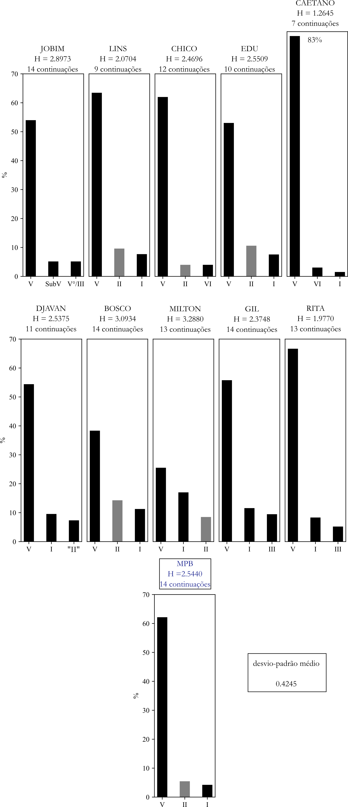
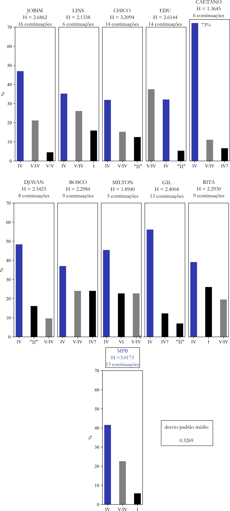
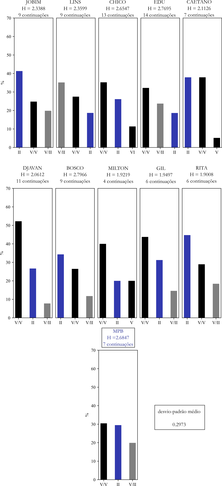
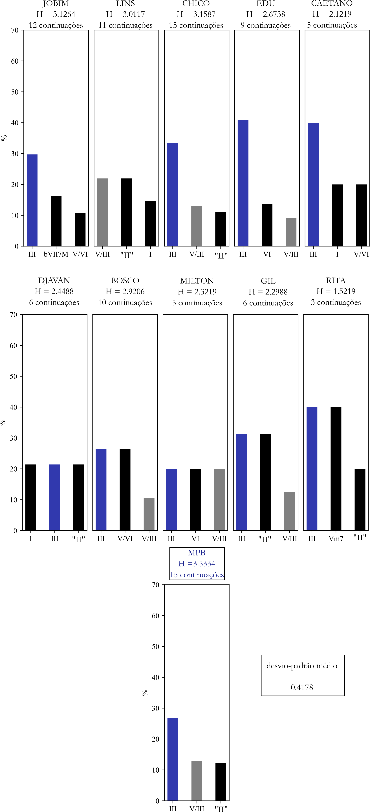

Entropia
1 Introdução
Este capítulo tem por objetivo apresentar resultados das análises referentes à medição de entropia de alguns aspectos melódicos, rítmicos e harmônicos computados no processo analítico. Assim, para cada evento selecionado para medição,1 será explicitada sua entropia (medida em bits) e o número de suas possíveis continuações com probabilidade de ocorrência maior do que 0.01 (ou 1%), um limite por nós arbitrado.2 Serão identificadas neste exame apenas as três mais prováveis continuações para cada evento.
Também por uma questão de foco, as análises das entropias dos domínios/subdomínios estruturais não abrangerão a totalidade de seus respectivos conteúdos, mas apenas subgrupos de seus eventos, formados por aqueles, de algum modo, mais significativos musicalmente, que apresentam-se assim como representantes de seus respectivos alfabetos.3
As discussões que se seguem a cada conjunto de gráficos considerarão não apenas os dados quantitativos (entropia e número de continuações acima do limite de 1%), mas também aspectos qualitativos, a partir de uma tipologia que será descrita a seguir.
O primeiro conceito que introduziremos é o de reflexão, que se aplica quando uma das três mais frequentes continuações de um dado evento for uma replicação do evento em questão. Uma reflexão será alta quando corresponder à primeira continuação (e será baixa se acontecer nas posições 2 ou 3). Nos gráficos de entropia, a ocorrência de reflexão em uma das três continuações consideradas será indicada por uma barra de fundo cinza (continuações não reflexivas serão representadas por barras com fundo preto).
As duas outras ideias se referem à primeira continuação (seja reflexiva ou não). Ela será proeminente se seu percentual for igual ou maior que 50%. Por outro lado, a primeira continuação (não necessariamente proeminente) será considerada forte caso seu percentual seja ao menos o dobro do percentual da segunda continuação.
O cruzamento dessas categorias torna-se assim um recurso de apoio para a qualificação das entropias dos eventos em análise.
2 Subdomínio do contorno melódico
Os sete gráficos abaixo examinam as entropias das c-letras que formam o alfabeto Ac.
2.1 c-letra u (“repetição”)

DISCUSSÃO
A r-letra u é reflexiva-alta em todos os corpora. É ainda proeminente-forte em metade deles (Jobim, Chico, Bosco, Milton e Rita). No conjunto MPB apresenta-se como reflexiva-alta-forte. Tais dados indicam uma forte tendência autoatrativa dessa c-letra como uma característica da Prática Comum da MPB. Ou seja, u é não apenas bastante frequente em linhas melódicas emepebísticas, como também o são sequências de notas repetidas, um elemento que se mostra, assim, caracterizante em todos os repertórios (ao menos, em média). Classificaremos, a partir deste ponto, como inercial um determinado evento que se apresente como reflexiva-forte em cinco ou mais repertórios de análise. Podemos assim considerar u como intensamente inercial.
2.2 c-letra P (“passo ascendente”)

DISCUSSÃO
P é reflexiva em todos os corpora, sendo também forte em quatro deles (o que não a torna inercial, dentro de nossa classificação). Em nenhum repertório apresenta-se como predominante. Entretanto, diferindo-se dos demais casos, a continuação de P na c-letra u no corpus Chico é predoominante-alta, o que sugere ser esta uma característica estilística pessoal na construção melódica do compositor.
2.3 c-letra p (“passo descendente”)

DISCUSSÃO
Como acontece com a repetição (u), a c-letra p é reflexiva-alta em todos os repertórios (o que, por si só, a torna fortemente inercial), tendendo, portanto, a se perpetuar em linhas escalares descendentes. Em reforço a isso, em cinco dos 10 corpora (Lins, Chico, Edu, Caetano e Gil), além do próprio conjunto MPB, apresenta-se também como uma continuação forte.
2.4 c-letra A (“arpejo ascendente”)
DISCUSSÃO
A c-letra A apresenta um perfil consideravelmente distinto dos casos anteriores. Em apenas quatro corpora é reflexiva (sendo também forte somente em um deles – Lins). As demais continuações preferenciais privilegiam repetições u (três corpora) ou provocam mudança de direção melódica (ou seja, descendente) com p (também três corpora – apresentando-se como alta em Jobim) e a (um corpus).
2.5 c-letra a (“arpejo descendente”)

2.6 c-letra S (“salto ascendente”)
DISCUSSÃO
Um elemento marcante de S em relação às demais c-letras é o fato de não ser reflexiva em nenhum dos corpora. Por outro lado, é altamente enviezada pela continuação em passo descendente (p),4 que acontece em nove dos 11 gráficos. Em Gil e Rita a continuação p é proeminente (mais do que 50%), o que acontece também no corpus Caetano, acrescentando-se o atributo forte.
2.7 c-letra s (“salto descendente”)
DISCUSSÃO
A c-letra s, assim como sua contraparte S, não é reflexiva em nenhum repertório.5 Também como S tende a ser seguida por um movimento em sentido contrário, neste caso, porém, não um único tipo, mas apresentando três alternativas: A (seis corpora, Jobim, Edu, Caetano, Djavan, Milton e Gil – neste como proeminente-forte), S (dois corpora, Chico e Djavan) e u (Bosco e Rita).6
3 Subdomínio do ritmo
Devido ao tamanho do alfabeto de r-letras (26 símbolos), foram selecionadas para a análise de entropia as seis r-letras mais recorrentes do conjunto MPB: j, b, e, n, r, s.7
3.1 r-letra b

DISCUSSÃO
A r-letra b pode ser considerada, analogamente à categoria funcional I, uma espécie de tônica micrométrica, não apenas por ser uma finalização bastante comum de c/r-palavras, mas por sua alta recorrência em todos os repertórios analisados (é o 1-grama rítmico mais comum em sete dos 10 corpora MPB). Como se observa no gráfico, b é reflexiva-alta em todos os 11 casos, sendo também forte em Djavan e proeminente-forte em Lins, Edu e, especialmente, em Milton.
3.2 r-letra e
DISCUSSÃO
A r-letra e apresenta-se como reflexiva-fraca em quase todos os repertórios (apenas em Jobim não está entre as três mais prováveis continuações). É, por assim dizer, atraída por j, que se apresenta como continuação preferencial em nove corpora (e no conjunto MPB),8 sendo que em cinco deles (Jobim, Chico, Caetano, Gil e Rita) é também proeminente-forte.9
3.3 r-letra j
DISCUSSÃO
A r-letra que corresponde ao par de colcheias (j) é reflexiva-forte em nove dos corpora (bem como no conjunto MPB), sendo ainda proeminente-alta em Chico, Gil e Rita (estes dois com grande destaque), o que sugere que linhas em colcheias tendem a se perpetuar em frases (algo que foi observado com bastante frequência nas análises dos vários repertórios).
3.4 r-letra n

DISCUSSÃO
A r-letra n, unidade que, por si só, representa a essência da sincopação do samba,10 tem marcante presença na Prática Comum da MPB, apresentando-se como reflexiva-forte em oito dos 10 corpora de análise (as exceções são Milton e Rita, nos quais n não é uma das três mais prováveis continuações). Em Jobim, Djavan, Bosco e Gil (e no conjunto MPB) a continuação em n é ainda proeminente. Destcam-se como continuações recorrentes as r-letras c e r, que quando combinadas a n, formam blocos sincopados bastante recorrentes em gêneros de samba e bossa nova.
3.5 r-letra r
DISCUSSÃO
A r-letra r é reflexiva em seis corpora (apenas em Caetano e Gil é também forte). Considerando suas continuações preferenciais, n é a mais provável em seis dos repertórios (e também no conjunto MPB), o que gera bigramas sincopados bem recorrentes em contextos de samba e bossa nova.
3.6 r-letra s

DISCUSSÃO
O grupo de quiálteras de colcheias (s) é reflexiva em oito corpora (sendo também forte apenas em Gil e Lins). Sua continuação mais provável é a r-letra b (especialmente posicionada em finais de segmentos), que se apresenta como preferencial em sete dos repertórios (e no conjunto MPB), tendo maior destaque em Jobim, como proeminente-alta.11
4 Domínio da harmonia
4.1 Classe funcional DIA
4.1.1 Categoria funcional I

DISCUSSÃO
Uma propriedade interessante observada na categoria I é a reflexão. Explica-se, principalmente, pelo uso de variantes de tipos acordais que denotam movimentações internas de vozes (por exemplo, CM7 | C6), um recurso relativamente comum na estruturação harmônica em vários dos repertórios. Em cinco dos corpora (Jobim, Lins, Edu, Bosco e Milton – além do próprio conjunto MPB) a categoria apresenta-se como reflexiva-forte-alta. Excluindo a continuação reflexiva, V, IV e IV7 são as mais prováveis opções de continuação.
4.1.2 Categoria funcional V

DISCUSSÃO
Embora V seja também uma categoria reflexiva em todos os repertórios 12, apresenta-se sempre como fraca, já que é intensamente atraída pelo grau tônico I. Esta continuação preferencial se apresenta como predominante-alta em seis corpora (Chico, Djavan, Bosco, Milton, Gil e, especialmente, Caetano) e como predominante nos demais.
4.1.3 Categoria funcional IV
DISCUSSÃO
A categoria IV apresenta-se como reflexiva em metade dos repertórios (apenas em Lins e Edu é reflexiva-forte). Em relação às continuações de maior probabilidade, as opções dividem-se entre V (Chico, Djavan, Bosco, além do conjunto MPB) – uma espécie de “solução cadencial” associada mais firmemente à sintaxe funcional-tonal – e I (Caetano, Milton, Gil e Rita) – denotando uma preferência pelo gesto plagal, ou “solução modal”.13 Apenas em Jobim a continuação preferencial não é diatônica – IVm7 – evidenciando a forte presença da “descida plagal”14 na obra do compositor.
4.1.4 Categoria funcional II

DISCUSSÃO
Assim como V, a categoria II se apresenta como reflexiva em metade dos corpora (porém, desta vez, em todos os casos, como fraca). O que chama mais atenção, entretanto, é a forte atração que II tem pela continuação V, a qual apresenta-se como predominante-alta em oito dos repertórios (e mais no conjunto MPB), com destaque especial para o corpus Caetano, com probabilidade de ocorrência de 83%.
4.1.5 Categoria funcional VI
DISCUSSÃO
A propriedade de reflexão em relação ao VI ocorre em sete corpora, sendo em três deles como forte.15 Em termos de continuações preferenciais, em nenhum dos casos encontra-se predominância, sendo que apenas em Caetano a primeira continuação tem a propriedade de ser alta. Além dos três casos reflexivos, as demais preferências se dividem entre II (três casos – privilegiando a opção do movimento de fundamentais de quarta justa ascendente), I (dois casos), IV e V (um caso cada).
4.1.6 Categoria funcional III
DISCUSSÃO
Mais rara e com entropia mais alta que os demais diatônicos, a categoria III tem também um comportamento distinto em relação àquelas. Apresenta-se como reflexiva em apenas dois corpora, Bosco e Edu (onde é também forte-alta). Suas continuações preferenciais são VI (quatro casos, seguindo a lógica do movimento de fundamentais por quarta justa ascendente) e II (em três outros, evidenciando um movimento escalar descendente que omite – ou abrevia – a preparação V/II).
4.2 Classe funcional PRE
Para esta classe, introduziremos o conceito de continuação atrativa. Diz respeito aos alvos “declarados” (na própria simbologia funcional) das respectivas categorias funcionais. Assim, por exemplo, V/II atrai o diatônico II. Espera-se, portanto, que as continuações atrativas sejam sempre preferenciais em cada caso, já que isso estaria na própria razão de existência de seu preparador.16 Usaremos barras azuis nos próximos gráficos para evidenciar as continuações atrativas.
Subclassee DS
4.2.1 Categoria funcional V/V
DISCUSSÃO
Uma característica esperada de todos os dominantes secundários é a reflexão, já que faz parte do idioma MPB o encademanto entre acordes de qualidade X7 com mesma fundamental diferindo apenas pela variante empregada (por exemplo, G4.7 | G7, D7.9 | D7(b9), Bb7(13) | Bb7(b13) etc.). De fato, com a exceção dos corpora Caetano e Djavan (nos quais V/V não se encontra entre as três mais recorrentes continuações), todos os demais a categoria se apresenta como reflexiva-baixa (ou seja, na segunda ou na terceira posição). Por outro lado, o alvo V apresenta a propriedade atrativa em todos os repertórios, sendo também alta em Chico, Caetano, Bosco, Milton e Gil, e proeminente-alta em Djavan e, especialmente, Rita (com quase 70% de probabilidade de ocorrência).
4.2.2 Categoria funcional V/IV

DISCUSSÃO
Certamente não por acaso, V/IV tem um comportamento bastante semelhante a V/V no aspecto aqui examinado.17 Assim, a categoria é reflexiva em todos os corpora (apenas em Edu é também alta). Seu alvo declarado apresenta-se como continuação atrativa em todos os repertórios, forte em quatro deles e proeminente em dois Gil e Caetano (neste caso, como 73% de probabilidade).
4.2.3 Categoria funcional V/II

DISCUSSÃO
Em comparação aos casos anteriores vemos algumas diferenças significativas, devido a características especiais da categoria V/II: (a) a propriedade de reflexão deixa de ser ubíqua, atingindo sete dos repertórios (e apenas em Lins apresenta-se como alta); (b) a continuação no alvo II, embora seja sempre uma das três mais prováveis dos corpora, é atrativa em apenas três casos (Jobim, Caetano e Rita), em nenhum deles como predominante ou forte; (c) V/V apresenta-se como uma continuação ainda mais provável do que o alvo declarado (II) em cinco repertórios (além do próprio conjunto MPB).18 Esse fato denota a força das fórmulas de dominantes consecutivos nos repertórios analisados, especialmente envolvendo o 3-grama V/II | V/V | V, o mais recorrente (em média) das alternativas disponíveis.19
4.2.4 Categoria funcional V/VI
DISCUSSÃO
O número de corpora nos quais a categoria V/VI mostra-se como reflexiva é ainda menor do que no caso de V/II: apenas quatro. Por outro lado, o alvo VI apresenta-se como atrativa (ou seja, como continuação preferencial) em nove dos repertórios (apenas em Jobim é suplantada – por pequena margem percentual – pela reflexão de V/VI), ajustando-se aos padrões observados em V/IV e V/V. Apesar disso, em nenhum dos casos a categoria se apresenta como predominante ou alta. Em relação ao emprego em cadeias de dominantes secundários, a continuação esperada (V/II) é encontrada em sete dos repertórios (sempre como segunda ou terceira opções).
4.2.5 Categoria funcional V/III

DISCUSSÃO
Como já apontado em outras avaliações harmônicas deste projeto, o alvo III é a categoria diatônica menos comum de sua classe, o que torna, consequentemente, ainda mais raro o seu dominante secundário (V/III). Essa constatação talvez explique a inusitada quantidade de “empates” entre as continuações principais, o que é observado em nada menos do que cinco corpora (Djavan, Bosco, Milton, Gil e Rita). Em quatro outros, III apresenta-se como atrativa (e tabém predominante em dois deles, Chico e Edu). Apenas em Lins, V/III mostra-se como reflexiva-alta (empatada em primeiro lugar com “II”).20 Entre outras continuações disponíveis, destaca-se a presença da categoria “II”. Ainda que esta englobe genericamente todas as possíveis instâncias da categoria denominada informalmente “II relativo”, nesse contexto, entretanto, denota claramente o termo locucional “II/II” (Em7 ou Em7(b5), em Dó maior), um uso idiomático de sobreposição bifuncional (aproveitando a identidade desse acorde e o alvo declarado – III).21 Por fim, evidenciando ainda a raridade da sequência de dominantes consecutivos iniciando-se em V/III,22 a continuação-alvo (V/VI) aparece apenas em dois dos corpora.
Subclasse SUBV
Levando em conta a relativa raridade de categorias da subclasse SUBV em alguns dos corpora (o que torna suas entropias extremamente baixas, ou mesmo nulas, inviabilizando suas análises neste capítulo), optamos por examiná-las apenas dentro do conjunto MPB.23
DISCUSSÃO
Embora compartilhem com dominantes (primário e secundários) a qualidade X7 e propensões diretas para seus respectivos alvos, as categorias da subclasse SUBV, caracteristicamente, não apresentam a propriedade de reflexão, uma interessante distinção de “comportamento” entre as subclasses-irmãs. Por outro lado, ambas as subclasses assemelham-se pelo aspecto de atratividade de seus alvos declarados.24 É, assim, alta com II e V e predominante-alta com IV e, especialmente, I.
Subclasse DIM
DISCUSSÃO
O caso da entropia das categorias diminutas apresenta diversos aspectos interessantes: (a) a continuação mais provável de V°/V não é seu alvo declarado, mas I, o que se explica pelo uso característico desse diminuto, a saber, como segundo elemento de uma variante da “descida plagal”25 – IV|V°/V|I (por exemplo, em Dó maior, F|F#°|C/G –26; (b) Nas demais categorias DIM-Dom (V°/II, V°/III, V°/IV e V°/VI), o alvo declarado apresenta-se como atrativo, com um destaque especial para II, que se mostra como continuação predominante-alta com percentual bastante elevado (80%); (c) A categoria DIM-Bord I° tende para I em quase 60% dos casos; (d) bIII° (a principal opção da subclasse DIM-Ponte) prepara ainda mais fortemente seu alvo II, com probabilidade de ocorrência maior do que 80%.
4.3 Classe funcional E1
Assim como o que foi feito na avaliação da classe PRE, optamos por analisar a entropia das categorias da classe dos Empréstimos de Primeira Ordem (E1) em dois blocos: no primeiro deles, as categorias mais comuns da classe, em média – IVm7 e IV7 – serão avaliadas nos corpora individuais, enquanto o segundo bloco avaliará seis outras categorias relativamente mais raras nos repertórios (bIIM7, #IVm7(b5), Vm7, bVIM7, bVIm7 e bVII7), considerando, nesse caso, seus comportamentos apenas dentro do conjunto MPB.
4.3.1 Categoria funcional IVm7
DISCUSSÃO
IVm7 é a categoria principal da subclasse Subdominante Menor (sd), tendo seu emprego característico como segundo elemento de “descidas plagais”. Isso fica evidente na forte presença de I (o terceiro elemento preferencial da fórmula) como principal continuação em nada menos do que sete corpora (além do próprio conjunto MPB). Em três destes (Jobim, Chico e Milton) I acumula ainda a propriedade alta, e no corpus Edu é, além disso, predominante. Embora menos comum a mudança de variante de tipo acordal nessa categoria (geralmente, na sequência Xm7|Xm6), ela apresenta-se como reflexiva em quatro corpora, sendo na posição forte em Lins.
4.3.2 Categoria funcional IV7
DISCUSSÃO
Ainda que seja um “empréstimo” cromático do diatônico IV, o chamado “subdominante blues” (IV7) não integra a fórmula da “descida plagal”, ao contrário das suas categorias-irmãs IVm7 e #IVm7(b5). A despeito disso, sua continuação preferencial é o grau tônico, I, o que se observa em nove dos repertórios (e no conjunto MPB).27 Como já apontado em outras avaliações no âmbito do projeto, os comportamentos de IV7 no que tange à entropia nos corpora Gil, Rita e Milton diferem consideravelmente em relação aos demais, devido às naturezas particulares das linguagens harmônicas praticadas por esses compositores. No caso de Gil e Rita, principalmente pela presença das estéticas blues/rock, enquanto em Milton isso se dá pelo tratamento modal (muitas vezes peculiar) que caracteriza sua música.
4.3.3 Categorias funcionais bIIM7, #IVm7(b5), Vm7, bVIM7, bVIm7 e bVII7
Referências
Notas de rodapé
Entenda-se um evento como uma generalização de um elemento simbólico em análise de entropia (ou seja, uma c-letra, uma r-letra ou uma categoria funcional).↩︎
Esse piso busca filtrar os resultados estatisticamente mais significativos e, ao mesmo tempo, evitar a pulverização da análise, com um grande número de observações.↩︎
No caso do subdomínio das alturas, será mapeado o alfabeto Ac completo, pelo fato de possuir um número reduzido de símbolos, apenas sete.↩︎
Esse dado confirma a tradicional regra de manuais de contraponto que determina que um salto melódico deva ser compensado por grau conjunto na direção contrária.↩︎
Ambos os dados corroboram as conclusões já discutidas sobre a raridade, em geral, dos saltos frente a outros movimentos mais discretos na construção melódica da MPB. Ou seja, ao contrário dos passos escalares (especialmente o descendente), saltos não tendem a se perpetuar, o que é, aliás, consistente com a ideia de que provocam descontinuidades de linhas melódicas, quando ocorrem.↩︎
Curiosamente, passo ascendente (p) não é a continuação preferencial de nenhum repertório, ao contrário do que se esperaria com a aplicação da regra da compensação do salto, como se observa em S.↩︎
Em conjunto, abrangem cerca de 2/3 do total do alfabeto.↩︎
Apenas em Lins j fica (por pouco) em segundo lugar, após b.↩︎
A sequência
consiste numa fórmula de abertura de r-palavra muito comum em todos os repertórios.↩︎ O que acontece também em Rita, considerando, nesse caso, a r-letra j.↩︎
O que se dá, especialmente, pelas características mudanças de variantes do tipo acordal Y que resultam de caminhos internos – muitas vezes cromáticos – em linhas de tensões mantendo-se a mesma fundamental, como, por exemplo, em G4.7.9 | G7(b9) ou G7.13 | G7(b13).↩︎
É bastante interessante perceber essa constatação neste aspecto específico, que reforça a afinidade que existe entre esses repertório, como já observado em outras avaliações da pesquisa.↩︎
Isso se deve em boa parte ao recurso do chamado “clichê cromático” em acordes de modo menor (por exemplo, Am | Am(M7) | Am7 | Am6 | Am(b6) | Am), que costuma ser aplicado, caracteristicamente, na categoria funcional VI.↩︎
Certamente, essa ideia poderia ser estendida ao contexto dos diatônicos, como constatamos no caso de II (que “atrai” V) e, especialmente, V (que tende fortemente para I, em todos os repertórios). No entanto, é importante enfatizar que tais categorias são diatônicas, não tendo sido estabelecidas com intuito específico de preparar esses alvos, enquanto as categorias preparadoras (DS, SubV, DIM) são inerentemente cromáticas e “criadas” apenas para tornar os alvos mais esperados, o que se denota por suas próprias simbologias. Podemos, assim, ver as continuações de II e V como “atraídas” por tais categorias, mas como resultado de processos funcionais que, eventualmente, podem ser atenuados ou mesmo contraditos por condições contextuais e estilísticas.↩︎
Afinal, ambas as categorias têm como alvo pilares estruturais essenciais da funcionalidade tonal. Por outro lado, podemos lembrar que a frequência de ocorrência média de V é consideravelmente maior do que a de IV em todos os repertórios: enquanto a fórmula V/V | V é caracteristicamente encontrada em duas alternativas cadenciais – autêntica e semicadência – e que estas estão presentes na grande maioria das peças analisadas, o locus da sequência V/IV | IV (um dos gestos retóricos funcionais listados em Almada (2024)) é normalmente reservado para a preparação do ponto climático (o surgimento da subdominante estrutural), o que relativiza os seus respectivos pesos.↩︎
Em Djavan, como proeminente-forte.↩︎
Ver o capítulo sobre N-gramas específicos.↩︎
Esse corpus é o único no qual III não se encontra entre as três principais continuações, o que se deve, certamente, a uma baixa frequência de ocorrência.↩︎
Observe-se que algo semelhante ocorre em relação às continuações de V/VI (ver gráfico anterior), já que, nos termos aqui propostos, VI = “II/V”.↩︎
Ver capítulo N-gramas específicos.↩︎
O mesmo se aplica à próxima avaliação, considerando a subclasse DIM.↩︎
Com a exceção de III em relação a SubV/III, o que, no entanto, pode ser explicado pela sobreposição bifuncional, apontada acima (i.e., III = “II/II”).↩︎
A segunda inversão de I é normativa, permitindo o movimento cromático ascendente de baixo.↩︎
Apenas o corpus Lins diverge desse quadro, com a reflexão de IV7. O VI (como substituto diatônico de I) aparece como a segunda continuação mais provável.↩︎